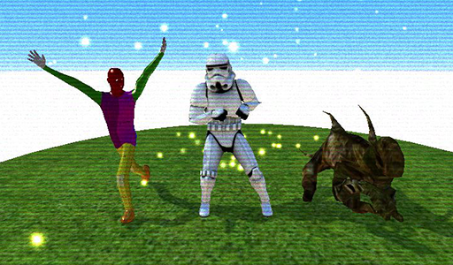

Animations are a essencial part of every game, sometimes it can be quite hard to get them right, in this tutorial we will explore the multiple options for 2D and 3D animations in nunuStudio.
Skeletal animation is a technique in computer animation in which a character is represented in two parts, a surface representation used to draw the character (called skin or mesh) and a hierarchical set of interconnected bones (called the skeleton or rig) used to animate (pose and keyframe) the mesh.
While this technique is often used to animate humans or more generally for organic modeling, it only serves to make the animation process more intuitive and the same technique can be used to control the deformation of any object, a door, a spoon, a building, or a galaxy. When the animated object is more general than, for example, a humanoid character the set of bones may not be hierarchical or interconnected, but it just represents a higher level description of the motion of the part of mesh or skin it is influencing.
To import a new spritesheet animation into nunuStudio, we can select import/Texture/Spritesheet texture in the resource explorer. After we have selected an image a special type of texture will be created. We can open the spritesheet editor by double clicking the newly created texture.
The image bellow shows an example of a 10x8 animation spritesheet, that spritesheet actually contains multiple animations the character moving up, down, right, left and a couple of static poses.
We have to manually configure in the spritesheet editor its size, number of frames to be used, where to start and end the animation, and how fast do we want to play it.
The example bellow uses three different spritesheet animations, one of them is controlled using a script object to display different parts of the animation depending on the player movement, this example also shows really well how lights can be used for 2D scenes. To try this example in the editor you can download the project file or open it on the Web Editor.
Spine is a 2D animation software for Windows, Mac and Linux, developed by Esoteric Software. Spine is mostly targeted to people doing 2d video games, but can be used for pretty much any kind of 2D animated work.
For this tutorial Spine is not required, you can download some sample animations from Esoteric Github page, only paid versions of spine can be used to export animations.
Spine animations can be imported into nunuStudio by selecting "Spine animation" on the resource explorer import menu. Spine objects can have multiple animations stored. nunuStudio provides a simple API to select and play animations. Animations can also have skins attached, the same object can use multiple skins. The image bellow shows the same Spine object using two different skins.

The code bellow demonstrates how to change the animations programatically using the setAnimation(track, name, loop) function available in the SpineAnimation object. You can check the animations available for your animation in the object panel in the animation dropdown menu. There is also a setSkin(name) function that can be used to change the skin in use during runtime.
var spineboy;
function initialize()
{
spineboy = scene.getObjectByName("spineboy");
}
function update()
{
...
if(Keyboard.keyJustPressed(Keyboard.RIGHT) || ...)
{
spineboy.setAnimation(0, "run", true);
}
if(Keyboard.keyJustReleased(Keyboard.RIGHT) || ...)
{
spineboy.setAnimation(0, "idle", true);
}
}
The example bellow uses the spineboy animation available free on the spine runtime repository, and demonstrates how to use spine animations in a platformer style game.
Spine animations also have support for inverse kinematics, its also possible to use the mouse and keyboard import to change what would be the normal animation flow in order to adapt it to the current events.
Another way to animated objects is coding, scripted animations sometimes allow for a more dynamic interactiong, and can sometimes be even easier to do than using visual tools. We can easily animate the properties of objects, textures, materials, etc. Be creative a couple of lines of code can easily make good animations.
To try this example in the editor you can download the project file or open it on the Web Editor.